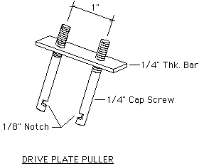

<!--
title: fierosails.com
description: 
published: true
date: 2025-10-29T20:54:53.726Z
tags: fierosails
editor: code
dateCreated: 2025-10-29T20:54:53.726Z
-->
</head>

<body bgcolor="#FFFFFF" text="#000000">
<table width="100%" border="0" cellspacing="5" cellpadding="0">
  <tr> 
    <td width="20%" height="1200" align="left" valign="top"> 
      
      <font face="Verdana, Arial, Helvetica, sans-serif" size="2">

<p>
     <a href="index.html">HOME</a><br>
     <a href="order.html">Order Form</a><br><br>
     
     Sail Panels<br>
     <a href="pics.html">- Sail Panel Choices</a><br>
     <a href="whats.html">- What's a Sail Panel?</a><br>
     <a href="howto.html">- How to Remove &amp; Replace Sail Panels</a><br>
     <a href="custom.html">- Custom Graphics</a><br>
     <a href="bargains.html">- Bargains</a><br>
     <a href="care.html">- Sail Panel Care</a><br><br>
     
     Decals<br>
     <a href="decal.html">- Decal Choices</a><br>
     <a href="bargains.html">- Bargains</a><br><br>
     
     Parts<br>
     <a href="paulsphotos.html">- Parts for Sale</a><br>
     <a href="PartsManual.html">- Parts Interchange Manual</a><br>
     <a href="heatshield.html">- Firewall Heat Shield</a><br><br>
     
     Info<br>
     <a href="fierosecrets.html">- Fiero Secrets</a><br>
     <a href="tempgage.html">- Temp Gauge Fix</a><br>
     <a href="InjectorTester.html">- Poor Man's Fuel Injector Tester</a><br>
     <a href="headlights.html">- Headlight Repair</a><br>
     <a href="ElectricAntenna.html">- Fiero Electric Antenna!</a><br>
     <a href="belt.html">- Fix That Loose Belt!</a><br>
     <a href="clubs.html">- Fiero Clubs</a><br><br>

     <a href="payship.html">Payment &amp; Shipping</a><br>
     <a href="refs.html">References</a><br>
     <a href="gallery.html">Rogue's Gallery (photos)</a><br>
     <a href="email.html">Contact Us</a>

<br>
        </font> </p>
    <td width="1%" bgcolor="#FF0000" height="1200" valign="top"></td>
    <td width="79%" align="left" valign="top">
      <font color="red">

<h1 align="CENTER">FIERO HEADLIGHT REPAIR</h1></font>


<p><font face="Verdana, Arial, Helvetica, sans-serif" size="2">If your Fiero headlights 
  appear to have a mechanical problem then you've come to the right web page. 
  Failure of the headlight mechanism is a frequent problem on Fieros due to their 
  age. The design of the '84-'86 headlight mechanism is different than '87-'88 
  and the earlier years tend to have the most problems. <b>(For information on 
  how to change '84-'86 headlights to the '87-'88 style, go to the end of this 
  writeup.)</b> All years have a reversible motor with a worm gear on the motor 
  shaft; the worm gear drives a circular white nylon gear that turns the output 
  shaft to the headlight housing linkage. The method to transfer the torque from 
  the white nylon gear to the output shaft is the source of most problems. (But 
  not all.) </font></p>
<p><font face="Verdana, Arial, Helvetica, sans-serif" size="2">On '84-'86 Fieros 
  there is a drive coupling (green plastic on the units I've seen) in the center 
  of the white nylon drive gear that disintegrates over time. The remains of this 
  coupling have been described by others as "hard grease" or "gear shavings", 
  but from what I can see it's just greasy remains of the coupling. Sometimes 
  pieces from the coupling jam the gears, cause slow operation, and eventually 
  cause teeth to be stripped from the nylon gear. If the nylon gear is replaced 
  without also replacing the coupling then the nylon gear teeth are very likely 
  to strip again prematurely. Therefore the trick is to replace the drive coupling 
  as well as the gear. It is possible to repair the coupling before the gear is 
  stripped (when the headlights first begin to malfunction) and naturally this 
  is the best course of action. A procedure for replacing the drive coupling is 
  described in detail below. </font></p>
<p><font face="Verdana, Arial, Helvetica, sans-serif" size="2">If the nylon gears 
  need to be replaced your least expensive solution is to pull a used motor from 
  a junk yard, but new OEM (original equipment manufacturer) gears and drive couplings 
  (sometimes called 'bumpers') are available inexpensively (around $25) from Rodney 
  Dickman (http://www.rodneydickman.com). Rodney also has the electrical and 
  brush assemblies if you need them. Metal gears are available from Alan Mooty, 
  Easy Tech Ind., Inc., 8061 Nicklaus Drive, Orlando, FL 32825 (407) 275-5040. 
  Gears are $45.00 each including shipping. And a very reliable source for a complete 
  headlight motors is Ed Parks at the Fiero Factory in Toney, Alabama, phone (256) 
  420-5391 or e-mail at fierofactory@juno.com. </font></p>
<p><font face="Verdana, Arial, Helvetica, sans-serif" size="2"><b>On '87-'88 Fieros</b> 
  the headlight drive system was re-designed but a similar problem occurs. The 
  headlight linkage output shaft is driven by a triangular plastic rotor that 
  is turned by a nylon gear via what I believe is a clutch system. The clutch 
  appears to prevent the motor from stalling abruptly at the end of the travel 
  linkage or if something impedes the headlight movement. The clutch consists 
  of three small solid white rods or rollers (others have called these bushings) 
  that appear to be made of white plastic. These rollers fit between the lobes 
  of the triangular rotor within the body of the nylon gear. If the headlight 
  is jammed, the triangular rotor squeezes past the rollers until the motor shuts 
  off. Problems occur when, as in the '84-'86 models, the plastic rollers disintegrate 
  and jam the gears inside the case or disintegrate and fail to transmit rotary 
  motion to the output shaft. The result is headlights that operate erratically 
  at first, then not at all. </font></p>
<p><font face="Verdana, Arial, Helvetica, sans-serif" size="2">I have replaced 
  '84-'86 drive couplings with hot-melt glue for a few cents each. I have also 
  used RTV silicone sealant. I believe the couplings could also be replaced with 
  epoxy, but I have not tried this method. Dave Rodabaugh makes a drive coupling 
  from RTV sealant that works well. Again, your best bet is to get OEM replacements 
  from Rodney Dickman. The '87-'88 rollers can be replaced with 1/2" x 1/2" nylon 
  spacers available at hardware stores and home centers. (These have a hole down 
  the center, but this is not a problem.) The correct size is 0.480"-0.482" diameter 
  by 0.450" long. You will have to do a little sanding to get nylon spacers to 
  fit. Put the spacers on a long 6-32 machine screw with a nut behind it. Then 
  chuck the assembly in a drill and use sandpaper to reduce the diameter to about 
  0.48". The first headlights I repaired this way have been in service perfectly 
  since June 1997 with no evidence of deterioration. Rodney Dickman sells replacement 
  rollers for less than $5, complete with instructions. Rodney's web page address 
  is http://www.rodneydickman.com. </font></p>

<hr>
<p><font face="Verdana, Arial, Helvetica, sans-serif" size="2"><b>HEADLIGHT REPAIR 
  PROCEDURE ('84 -'86 only)</b> </font></p>

<p><font face="Verdana, Arial, Helvetica, sans-serif" size="2">While the typical 
  headlight problem can be electrical in nature, it is usually mechanical as described 
  above. This can be determined with certainty only by disassembling the motor 
  housing. If you get to the point where you want to disassemble the motor, here's 
  how. </font></p>
<p> </p>
<p><font face="Verdana, Arial, Helvetica, sans-serif" size="2">1. Remove the headlight 
  assembly from the car after unplugging the headlamp wires and the motor wires. 
  There are four 10 mm nuts holding each assembly. Loosen the lower two nuts first 
  (no need to remove them) then remove the upper two. You will have to raise the 
  headlight by manually turning the knob on the motor so you can reach the lower 
  nuts. Help it with hand pressure if it sticks or won't move. Then lower the 
  headlights and remove the upper nuts. Tilt the headlight assembly forward slightly 
  until it clears the mounting bolts and lift it from the car. Take the headlight 
  assembly(ies) to a workbench. </font></p>
<p><font face="Verdana, Arial, Helvetica, sans-serif" size="2">2. Disconnect the 
  small lever arm that connects the motor output shaft to the headlight linkage. 
  It is held with a "C" clip. This lever arm is on the outside of the motor housing 
  and is what drives the headlights up and down. Unbolt the motor from the headlight 
  assembly and set the assembly aside. Remove the nut which attaches the lever 
  arm to the motor output shaft. Save the nut. Pull the lever arm off the motor 
  output shaft and set it aside. </font></p>
<p><font face="Verdana, Arial, Helvetica, sans-serif" size="2">3. Drill out the 
  rivets which hold the motor housing together until they are weakened enough 
  to drive them out with a punch or small nail. Do not drill so much that you 
  enlarge the holes in the housing. (The '87-'88 motor housing is held together 
  with screws.) If you purchase a replacement gear from Rodney Dickman it will 
  come complete with replacement screws for the housing. </font></p>
<p><font face="Verdana, Arial, Helvetica, sans-serif" size="2">4. In addition 
  to the rivets, the motor housing is held together with what appears to be white 
  silicone adhesive, similar to what you might use for bathroom fixtures. Carefully 
  split open the motor housing using a screwdriver. There are slots around the 
  edge for this purpose. As you open the housing, hold it with the smaller side 
  of the housing on top; this is the "empty" side and will minimize the chance 
  something might fall out before you can see where it fits. Set the top half 
  of the housing aside. </font></p>

<p><font face="Verdana, Arial, Helvetica, sans-serif" size="2"> 5. Look around 
  the inside of the housing to see what might be loose. You will see the electric 
  motor, brushes, high-torque switch, a worm gear, a metal drive gear, and a nylon 
  gear. You will typically find old grease and tiny shards of green plastic. The 
  green plastic is what is left of the drive coupling. You will replace this coupling 
  in Step 11. If the metal or nylon gears are stripped at any point on their circumference you will need replacements. 
  </font></p>
<p><font face="Verdana, Arial, Helvetica, sans-serif" size="2">6. If the gears 
  are ok and only the green drive coupling is shattered you must remove the nylon 
  and metal gears to effect repairs. The nylon gear and shaft must be removed 
  from the housing as a unit. If the shaft with the nylon gear won't pull out 
  easily then it can be pressed out in a bench vise. (I have never found one that 
  did not need to be pressed out.) Put a couple of pieces of wood (I use 2 x 2 
  about four inches long) on the motor housing straddling the nylon gear. Then 
  put the whole unit in the vise and tighten the jaws against the end of the shaft 
  (where you removed the nut in Step 2) and the two wood blocks. Watch to ensure 
  you do not overstress and crack the housing. You may need to tap on the shaft 
  or housing gently as you tighten the vise to get the shaft to pop loose. </font></p>

<p><font face="Verdana, Arial, Helvetica, sans-serif" size="2">7. When the shaft 
  is pressed out of the housing, remove the housing from the vise and pull the 
  shaft free if it hasn't fallen out. Also pull out the metal gear (don't lose 
  the spring washer on the end of the shaft). Clean them both in solvent to remove 
  all the old grease and plastic particles. Clean out the housing. </font></p>
<p><font face="Verdana, Arial, Helvetica, sans-serif" size="2">8. Now remove the 
  metal drive plate which is connected to the gear shaft by a press fit. This 
  drive plate is black and has four small metal tabs that are bent at 90 degrees 
  to the plane of the drive plate. These metal tabs fit into the green drive coupling, 
  but the coupling is typically disintegrated with just a few large chunks stuck 
  between the drive plate and the nylon gear. The drive plate must be removed 
  in order to replace the drive coupling. It is difficult to pull the drive plate 
  off the shaft because of its press fit. I had to make a special pulling tool 
  to do this. Other people have reported using Vise-Grips, but I have not tried 
  this for fear of damage. </font></p>
<p><font face="Verdana, Arial, Helvetica, sans-serif" size="2">My pulling tool 
  was made from two 1/4" cap screws (bolts that are not fully threaded) with the 
  heads cut off. The end of the bolts with no thread was carefully notched with 
  a file about half way through the bolt. The notch in each bolt is hooked under 
  the drive plate to pull it from the shaft. The threaded ends of the bolts are 
  inserted through holes in a 1/2" wide metal bar (I used 1/4" thick aluminum, 
  but anything will do). The two holes in the metal bar for the bolts are drilled 
  1" apart. The bar rests on the end of the gear shaft and the notched bolts run 
  through the holes in the bar down to the metal drive plate. Nuts are put on 
  the bolts and slowly tightened after the notch in the bolt is hooked over the 
  drive plate. The bolts tend to slip off the drive plate and may have to be held 
  with slip-joint pliers, but the system does work eventually. Here is a rough 
  sketch of the tool. The nuts are not shown. </font></p>
<p><font face="Verdana, Arial, Helvetica, sans-serif" size="2"><a href="images/Puller.gif"></a> </font></p>
<p><font face="Verdana, Arial, Helvetica, sans-serif" size="2">9. When the drive 
  plate has been removed from the shaft, pull off the nylon gear. This can be 
  done by hand but it will tend to catch on the burr left from the drive plate. 
  Remove any residual pieces of the damaged drive coupling and clean the gear 
  and drive plate in solvent. </font></p>

<p><font face="Verdana, Arial, Helvetica, sans-serif" size="2">10. Gently hold 
  the nylon gear in the vise or mount it in some other holding device that will 
  keep it steady while you replace the drive coupling (the damaged green plastic). 
  Position the nylon gear horizontally with hollow side up and the four internal 
  "spokes" visible. This is the side where the drive plate mounts. [Note: strictly 
  speaking, the nylon gear can be left on the shaft. I find it easier to follow 
  the next step with the gear removed, but it is not mandatory.] </font></p>

<p><font face="Verdana, Arial, Helvetica, sans-serif" size="2">11. Get a hot-melt 
  glue gun and about 4 to 6 inches of glue stick. Use a glue stick that is as 
  hard as you can find (not brittle) at room temperature. Allow the glue gun to 
  heat up well. When the gun is ready, put hot glue into the hollow side of the 
  nylon gear. Quickly fill up the cavity in the gear to the edge in all four sections, 
  then embed the drive plate into the hot glue with the four metal tabs straddling 
  the four spokes in the gear. The drive plate must rest against the hub of the 
  gear. When it is cool, the glue will have replaced the green drive coupling. 
  Remove the drive plate, reinstall the gear on the shaft and then the drive plate 
  (the drive plate will have to be pressed on) and reassemble the gears into the 
  housing. Use grease moderately on the gears. </font></p>
<p><font face="Verdana, Arial, Helvetica, sans-serif" size="2"> An alternative 
  to hot-melt glue is silicone sealant. I tried this on one headlight repair and 
  it worked fine. Fill the cavity of the nylon gear with silicone sealant instead 
  of glue and place the drive plate in place in its final position. Let it cure 
  overnight, then follow the instructions for the hot-melt system. </font></p>

<p><font face="Verdana, Arial, Helvetica, sans-serif" size="2"> Once again, the 
  best replacement for the drive coupling is an OEM version from Rodney Dickman. 
  </font></p>
<p><font face="Verdana, Arial, Helvetica, sans-serif" size="2">12. Place the two 
  halves of the housing together using silicone sealant (make sure there is no 
  grease on the mating surfaces) and hold the housing together using 4-40 or 6-32 
  bolts and nuts. (You can also enlarge the holes in the top half of the housing 
  and use 1/2" long sheet metal screws.) I use Loctite 242 to insure the nuts 
  do not come off the bolts. </font></p>
<p><font face="Verdana, Arial, Helvetica, sans-serif" size="2">13. Replace the 
  lever arm and nut, then reinstall the motor and headlight assembly in the car. 
  Test it and refer to the last part of Step 5 if it doesn't work properly. </font></p>
<p><font face="Verdana, Arial, Helvetica, sans-serif" size="2">That's it! </font></p>

<p><font face="Verdana, Arial, Helvetica, sans-serif" size="2">If you would like 
  to change your '84-'86 Fiero headlights to the '87-'88 design, here are the 
  instructions from Ed Parks (fierofactory@juno.com). </font></p>

<p><font size="2" face="Verdana, Arial, Helvetica, sans-serif" color="000000">"You 
  will need the underhood light wiring harness (unplugs just under the brake booster), 
  headlamp relay, radiator fan relay, and both headlamp motors. The motors will 
  bolt to the older frames. The hardest part is routing the wiring but the conversion 
  will make a more reliable, smoother, quieter system that is less expensive to 
  repair. Parts can come from any '87-'88 and make a nice upgrade to the '84-'86s."</font> 
</p>
<p><font face="Verdana, Arial, Helvetica, sans-serif" size="2">If you don't have 
  the necessary parts, you can get them from Ed Parks. </font></p>
<p> <font size="2" face="Verdana, Arial, Helvetica, sans-serif" color="000000"><b>Article 
  copyright January 1999, October, 1999, Paul McKibben</b></font> <font face="Verdana, Arial, Helvetica, sans-serif" size="2"></font> 

</p>
      </td>
  </tr>

</table>


</body>

<!--
     FILE ARCHIVED ON 13:55:50 Feb 17, 2009 AND RETRIEVED FROM THE
     INTERNET ARCHIVE ON 23:56:39 Oct 26, 2025.
     JAVASCRIPT APPENDED BY WAYBACK MACHINE, COPYRIGHT INTERNET ARCHIVE.

     ALL OTHER CONTENT MAY ALSO BE PROTECTED BY COPYRIGHT (17 U.S.C.
     SECTION 108(a)(3)).
-->
<!--
playback timings (ms):
  captures_list: 0.515
  exclusion.robots: 0.033
  exclusion.robots.policy: 0.025
  esindex: 0.009
  cdx.remote: 57.187
  LoadShardBlock: 452.518 (3)
  PetaboxLoader3.datanode: 276.577 (4)
  load_resource: 177.897
  PetaboxLoader3.resolve: 95.057
-->